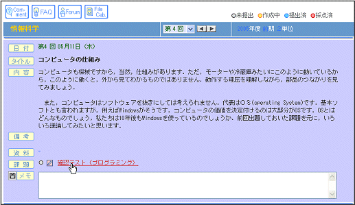
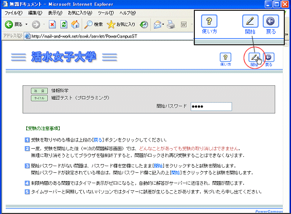
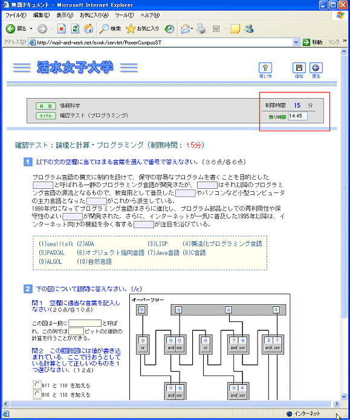
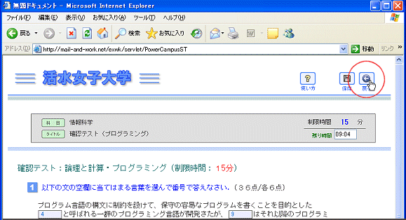
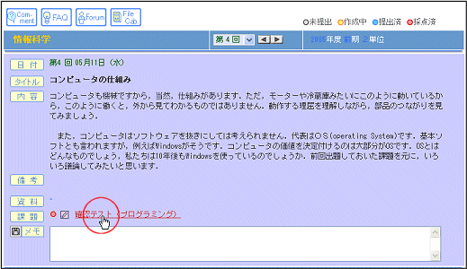
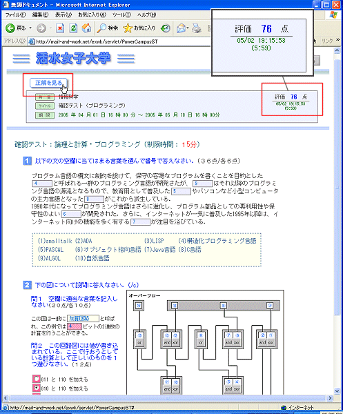
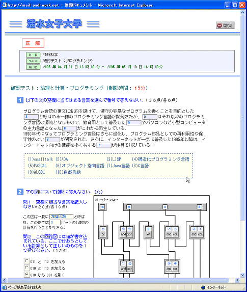

オンライン試験を受験する
試験を受験する
採点結果と解答を見る
オンライン試験は，記述式と選択式の問題からなり，自動採点されます．受験後，ただちに結果を知ることができます．オンライン試験では，強制的にブラウザを閉じると，ロックがかかって問題を開けなくなりますので注意してください．問題によっては，制限時間があったり，受験するのにパスワードが必要な問題もあります．ここでは，実際の受験から，成績確認の方法までを詳しく説明しています．
試験を受験する
課題タイトルをクリックする

注意事項を読み開始ボタンをクリックする
開始パスワードが設定してあれば，[
パスワード欄
]にそれを入力し，[
開始
]ボタンをクリックします．開始パスワード設定がないときは単に[
開始
]ボタンをクリックします．

試験課題に解答する
解答画面では，右上に制限時間の表示があります．開始と同時に時間がカウントダウンされ始めます．残り時間がゼロになると，自動的に回答が保存され，ブラウザも閉じます．とは言え，何かの拍子にデータが消失してしまわないように，解答中は，ときどき[
保存
]ボタンをクリックして保存しておいてください．

戻るボタンをクリックして終了する
制限時間前に，全ての解答を終えた場合は，[
戻る
]ボタンをクリックします．[
戻る
]ボタンは解答を保存した上で，講義画面にもどります．

採点結果と解答を見る
課題タイトルをクリックする
採点が済んだ試験課題には赤い採点済みランプが点灯します．このとき，タイトルをクリックして採点結果を見ることができます．

採点結果と解答を見る
採点結果は，右上の枠内に青字で示されます．解答のうち，間違ったところばピンク色に塗りつぶされています．正解と対照するには，左上の[
正解を見る
]ボタンをクリックします．

[
正解を見る
]ボタンをクリックすると，正解画面が別のウィンドウに表示されます．



 課題タイトルをクリックする
課題タイトルをクリックする
 注意事項を読み開始ボタンをクリックする
注意事項を読み開始ボタンをクリックする
 試験課題に解答する
試験課題に解答する
 戻るボタンをクリックして終了する
戻るボタンをクリックして終了する